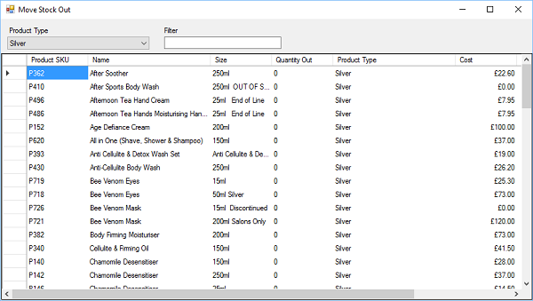

Stock will automatically be moved out during the Dispatch Orders process, however, there may
be other times when you need to be moved out of the location.

Enter the number of items to be moved out in “Quantity Out” column, then click the X in the top
right of the form to move the stock out.
Specify the quantity of stock being moved in for each stock item. You can filter the products
using the filter.
Only stock with a “Quantity Out” above 0 (zero) will be moved out of stock.
You will be prompted to enter a reason for the stock being moved out

Once a description has been entered click OK to move the stock out, or Cancel to cancel moving
the stock out.
Stock being moved out will be logged against the user moving stock out. See Stock History for
more details.